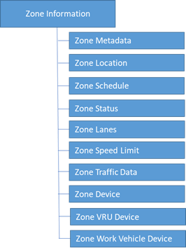

2.5.2 Data Exchange Needs
This section introduces the terms “zone” and “project.” A zone describes a section of roadway where VRUs, vehicles, and devices are present. A zone will generally have consistent characteristics throughout the section of roadway. A project may include one or more zones to represent varying roadway characteristics that change across space and/or time.
This section states the data exchange needs between CWZ actor components and is organized into the following sub-sections: • Zone Metadata • Zone Location • Zone Schedule • Zone Status • Zone Lanes • Zone Speed Limit • Zone Traffic Data • Zone Device • Zone Vulnerable Road User (VRU) Device • Zone Work Vehicle Device
The diagram below provides a high-level visual interpretation of these sections, which together represent the data exchange needs of connected work zones. The diagram is not intended as a schematic representation for software, application, or database design.

Figure 3. Data Exchange Needs – Zone Information Organization
2.5.2.1 Zone Metadata
CWZ data providers need to provide metadata about work zone information to data consumers. Metadata may support the need for data discovery and may provide information about the data’s provenance, trustworthiness, and chain of custody.
2.5.2.1.1 Zone Metadata – Zone Data Standard Version
CWZ data providers need to provide the version of the standard so that data consumers can identify and support multiple versions.
2.5.2.1.2 Zone Metadata – Zone Identifier
2.5.2.1.2.1 Support Zone Identifier for Zones
CWZ data providers need to include the zone identifier when providing work zone information to data consumers.
2.5.2.1.2.2 Support Unique Zone Identifiers
CWZ deployers need zone identifiers that uniquely identify each zone.
2.5.2.1.2.3 Support Unique Zone Group Identifiers
CWZ deployers need unique zones group identifiers to group zones within the same project.
2.5.2.1.2.4 Support Zone Identifiers for VRUs, Devices, Work Zone Vehicles, Lanes, and Speed Limit Zones
CWZ deployers need to associate VRUs, devices, work vehicles, lane configurations, speed limit zones, etc., with a uniquely identifiable zone or group of zones comprising a project.
2.5.2.1.3 Zone Metadata – Zone Activity Type
CWZ data providers need to specify the activity type present within a zone when providing work zone information to data consumers. Activity types may include: repair of spring cracks, pothole repairs, striping, mowing, guard rail repairs, repaving, construction, etc.
2.5.2.1.4 Zone Metadata – Zone Data Timestamp
CWZ data providers need to include a timestamp reflecting the creation time of the zone data when providing work zone information. Data consumers need this timestamp to assess the age, accuracy, and reliability of the data.
2.5.2.1.5 Zone Metadata – Zone Data Source
CWZ data providers need to provide data consumers with a data source identifier that indicates the original source of the data and most recent source of updates.
2.5.2.2 Zone Location
2.5.2.2.1 Zone Location – Geometry
CWZ deployers want to notify/alert distracted drivers ahead of their arrival at the work zone so that they can travel safely through the zone.
CWZ data providers need to provide zone location geometry when providing work zone information to data consumers.
2.5.2.3 Zone Schedule
2.5.2.3.1 Zone Schedule – Date-Times
CWZ data providers need to provide data consumers with the date and times when a work zone is scheduled to be active. .
2.5.2.4 Zone Segmentation
2.5.2.4.1 Zone Segmentation – Geometry
CWZ data providers need to provide zone geometries that correspond to a roadway segment with consistent zone characteristics (including, but not limited to road name, direction, lanes closed, start or end location). If characteristics vary along a section of roadway, CWZ data providers need to represent the area as multiple related zones.
2.5.2.4.2 Zone Segmentation – Date-Times
CWZ data providers need to provide zone schedules that correspond to roadway segments with consistent zone characteristics, such as road name, direction, lanes closed, and start or end time. If characteristics vary during the work period. CWZ data providers need to represent the work as multiple related zones with distinct schedules.
2.5.2.5 Zone Status
2.5.2.5.1 Zone Status – Is Active
One of the biggest challenges for CWZ data providers is determining when the active work is actually occurring. Knowledge of planned activity is generally unreliable and insufficient to satisfy the timeliness requirements of safety applications.
CWZ data providers need to indicate when a work zone is active when providing work zone information to data consumers.
2.5.2.5.2 Zone Status – Length
CWZ deployers manage work zone activities that can stretch across long distances, sometimes up to 60 miles.
CWZ data providers need to specify the zone length when providing work zone information to work zone data consumers.
2.5.2.5.3 Zone Status – Number of Lanes Open
CWZ data providers need to indicate the number of lanes open (available for traffic) when providing work zone information to work zone data consumers.
2.5.2.5.4 Zone Status – Ad-hoc (Unscheduled/Unplanned)
Some work zones are dynamic, arising without prior notice and lasting for short durations.
CWZ data providers need to provide information for ad-hoc work zones when providing work zone information to work zone data consumers.
2.5.2.5.5 Zone Status – Is Rolling/Moving
Many work zones are dynamic, without a fixed location, and move continuously over time. Examples include work zones for mowing, striping operations, and repaving.
CWZ data providers need to provide information for rolling/moving work zones when providing work zone information to work zone data consumers.
2.5.2.6 Zone Lanes
2.5.2.6.1 Zone Lanes – Numbering and Identification
2.5.2.6.1.1 Lane Information
CWZ deployers have identified the need to report information for every lane affected by construction or maintenance in a work zone.
2.5.2.6.1.2 Lane Numbering Is Left-to-Right or Right-to-Left
CWZ deployers have identified the need for a nationally consistent method of lane numbering.
CWZ data providers must specify the lane numbering method, including whether lanes are numbered left-to-right or right-to-left, as well as the starting number for the first lane, when providing work zone information to work zone data consumers.
2.5.2.6.2 Zone Lanes – Lane Type
CWZ data providers must use standardized titles for lane types when providing work zone information to work zone data consumers. For example, they must specify if a lane is a shoulder, drivable, or a special-use lane.
2.5.2.6.2.1 Zone Lanes – Lane is Drivable
CWZ data providers need to indicate whether a lane is drivable when providing work zone information to work zone data consumers.
2.5.2.6.2.2 Zone Lanes – Special Use
CWZ data providers need to indicate whether a lane is designated for special use when providing work zone information to work zone data consumers.
2.5.2.6.2.3 Zone Lanes – Reversible Lane
CWZ data providers need to identify whether a lane is reversible, including its status, and direction, when providing work zone information to work zone data consumers. When a lane is reversible, lane numbering that is normally left-to-right becomes right-to-left.
2.5.2.6.3 Zone Lanes – Connected Vehicle Environment Roadside Safety Applications
CWZ deployers developing applications for the connected vehicle environment may require detailed geometry attributes assigned to each node per lane in a work zone to account for road curvature. This need specifically supports the generation of MAP messages for CV applications. Example of deployers with this need include connected vehicle applications, CV pilots, and CV research projects.
CWZ data providers need to provide zone lane-level geometry when providing work zone information to work zone data consumers.
2.5.2.6.4 Zone Lanes – Lane Tapers
CWZ deployers need to identify lane tapers. CWZ deployers have referenced the MUTCD and determined that tapers should be developed based on roadway speed.
CWZ deployers using vehicles with driver assist functionality must navigate a work zone taper, and need to know the taper start/end points, the direction of lane change left/right, and the number of lanes to change.
2.5.2.6.4.1 Taper Start and End Positions, Direction of Taper, and Number of Lanes to Taper
CWZ data providers need to provide lane taper information, including start location, end location, direction (left-to-right or right-to-left), and the number of lanes to taper when providing work zone information to work zone data consumers.
2.5.2.6.5 Zone Lanes – Lane Closure Status
CWZ data providers need to indicate whether a lane is open or closed when providing work zone information to work zone data consumers.
2.5.2.7 Zone Speed Limit
CWZ deployers need real-time updates about speed limits in work zones, including the start and end points, and speed limit reductions in effect.
2.5.2.7.1 Zone Speed Limit – Positions/Geometry
CWZ data providers need to provide speed limit zone geometry, including start and end points of speed limit changes, when providing work zone information to work zone data consumers.
2.5.2.7.2 Zone Speed Limit – Speed Limit Change
CWZ data providers need to provide speed limit changes when providing work zone information to work zone data consumers.
2.5.2.8 Zone Traffic Data
CWZ deployers need to develop and maintain historical work zone traffic data for later data analysis about work zones.
2.5.2.8.1 Zone Traffic – Speed, Volume, and Occupancy
CWZ deployers may deploy devices to capture information about traffic speed, volume, and occupancy.
CWZ data providers need to provide information on traffic speed, volume, and occupancy for vehicles traveling through the work zone to work zone data consumers.
2.5.2.8.2 Zone Traffic – Queue Warning
CWZ data providers need to issue queue warnings for work zone data consumers entering a work zone when providing work zone information to work zone data consumers.
2.5.2.9 Zone Device
2.5.2.9.1 Zone Device – Inventory and Status
CWZ deployers send alerts to devices such as flashing beacons to work zone VRUs and drivers traveling through work zones.
CWZ data providers need to provide information about device inventory, availability, and status when providing work zone information to data consumers.
CWZ deployers need information about devices deployed in work zones, including: • Device type • Device location • Device status
2.5.2.9.2 Zone Device – Location Marker Type
CWZ deployers use location marker devices to identify and broadcast various work zone attribute locations, such as start and end points of work zone approaches, VRUs, taper zones. and speed limit reduction zones.
CWZ data providers need to provide location marker type and position when providing work zone information to data consumers.
2.5.2.9.3 Zone Device – Device Type
CWZ data providers need to specify the device type when providing work zone information to work zone data consumers.
Representative examples of zone device types include the following: • Arrow Boards • Cameras • Portable Message Signs • Speed Limit Signs • Speed Feedback Signs • Location Markers • Roadside Units
2.5.2.9.4 Zone Device – Position/Geometry
CWZ data providers need to provide the location or geometry of each device when providing work zone information to work zone data consumers.
2.5.2.9.5 Zone Device – Device Status
CWZ data providers need to provide the status of each device when providing work zone information to work zone data consumers.
2.5.2.9.6 Zone Device – Zone Identifier
CWZ data providers need to provide the zone identifier and/or project identifier associated with each work zone device when providing work zone information to work zone data consumers.
2.5.2.10 Zone Vulnerable Road Users (VRU) Device
2.5.2.10.1 Zone VRU Device – Worker Presence Status/Activity
The requirements contained in this section may be generalized to apply to VRUs, a superset of work zone workers.
CWZ deployers have identified a mission-critical need to absolutely identify in real-time whether workers are present in a work zone. For example, an OEM may allow the autodrive feature on a vehicle to stay active if no workers are present, but if workers are detected, the OEM may return control of the vehicle to the driver.
CWZ data providers need to provide real-time indications of workers presence in the work zone when providing work zone information to work zone data consumers.
2.5.2.10.2 Zone VRU Device – Position/Geometry
The requirements in this section include work zone workers, a subset of VRUs.
CWZ deployers need to address real-time VRU presence identification. This includes: • Providing a geographic description of an area within a work zone where VRUs are present. • Providing a point location to describe where workers are present, such as when a worker is wearing a vest with electronics that determine the VRU’s position/location.
CWZ deployers need VRU location information.
CWZ data providers need to provide real time indication of areas within the work zone where VRUs are present when providing work zone information to work zone data consumers.
CWZ data providers need to provide real time indication of VRU position/location where VRUs are present when providing work zone information to work zone data consumers.
2.5.2.11 Zone Work Vehicle Device
CWZ deployers need to know the real-time position and location of work vehicles in the work zone. CWZ deployers state that vehicles in a work zone present a hazardous condition. Generally, vehicle types for which location is needed to be shared includes: • Attenuator vehicles • Construction vehicles • Maintenance vehicles • Emergency vehicles • Stalled or disabled vehicles
2.5.2.11.1 Zone Work Vehicle Device – Vehicle Type
CWZ data providers need to provide the work vehicle type when providing work zone information to work zone data consumers. Work vehicle types include: attenuator vehicles, construction vehicles, maintenance vehicles, emergency vehicles, and stalled or disabled vehicles.
2.5.2.11.2 Zone Work Vehicle Device – Vehicle Position
CWZ data providers need to provide the location or position of work vehicles when providing work zone information to work zone data consumers. Work vehicles parked or stalled near travel lanes present a hazard.